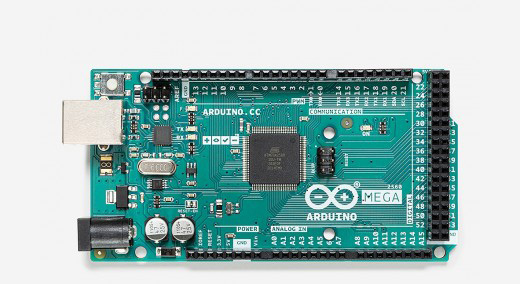
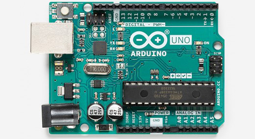
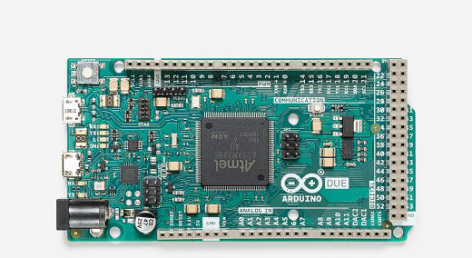

Hobby Columns

- MEGA 2560 -
------------------
Key Specifications:
- Microcontroller : ATMEL ATmega2560
- Operating Voltage : 5V
- Input Voltage (recommended) : 7-12V
- Input Voltage (limits) : 6-20V
- Digital I/O Pins : 54 (15 provide PWM output)
- Analog Input Pins : 16

- UNO -
------------------
Key Specifications:
- Microcontroller : ATMEL ATmega328P
- Operating Voltage : 5V
- Input Voltage (recommended) : 7-12V
- Input Voltage (limits) : 6-20V
- Digital I/O Pins : 14 (6 provide PWM output)
- Analog Input Pins : 6

- DUE -
------------------
Key Specifications:
- Microcontroller : ATMEL AT91SAM3X8E
- Operating Voltage : 3.3V
- Input Voltage (recommended) : 7-12V
- Input Voltage (limits) : 6-16V
- Digital I/O Pins : 54 (12 provide PWM output)
- Analog Input Pins : 12